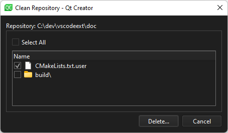

git clean
You can remove files that are not under version control from the project or local repository.
- To clean the current project directory, go to Tools > Git > Clean Directory of Project <name> and select Current Project Directory.
- To clean the local repository, go to Tools > Git > Local Repository and select Clean.
To clean the directory or repository:
- In the Clean Repository dialog, select the files to delete.

By default, ignored files are not selected.
- Select Delete to remove the selected files.
See also How To: Use Git and Git.